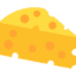

R
ROSAГенерация изображений
«ROSA» готовит визуальные материалы по заданию.
Раздел «Изображение → изображение»: варианты ИИ для этой задачи, описания возможностей и переходы к обзорам. Сравните несколько решений на одинаковом примере.
Создайте стилизованный вариант собственной фотографии для творческого проекта. Укажите технику и палитру, а также обязательные детали исходника; сравните положение персонажа, крупные предметы и композицию, чтобы стиль не заменил основной сюжет новой сценой.
Преобразуй мою фотографию прогулки в книжную акварельную иллюстрацию: мягкая охристая палитра, лёгкая бумажная фактура. Сохрани позу человека, форму зонта и расположение дорожки, без дополнительных персонажей.

«ROSA» готовит визуальные материалы по заданию.
SketchGPT превращает загруженный эскиз продукта в варианты визуального оформления. Инструмент добавляет тени и объём, сохраняя нейтральный фон для представления предмета. Пользователь может рассматривать разные темы изображения, чтобы увидеть, как исходный рисунок выглядит после выбранной обработки и изменения визуальной подачи.
Для «Tatship» сначала определите свою задачу и требуемый результат. Карточка относится к направлению «Аватары и портреты».
«Topaz Photo AI» представлен в разделе «Изображения». При выборе проверьте нужную операцию и условия работы с результатом.
Для «AID-Photo» сначала определите свою задачу и требуемый результат. Карточка относится к направлению «Изображения».
Сравнивать «Caricaturer.io» с другими инструментами раздела «Арт» удобнее на одинаковом исходном материале.

«Cheese AI» готовит визуальные материалы по заданию.
«Decorion AI» помогает представить оформление помещения.
«Erase It!» убирает выбранные объекты из визуального материала.
«FirstPic» представлен в разделе «Редактировать изображение». При выборе проверьте нужную операцию и условия работы с результатом.
«Genera» помогает представить оформление помещения.
«Gepetto» помогает представить оформление помещения.
«Green Screen AI» отделяет объект от фона изображения.
Img Upscaler обрабатывает изображения низкого разрешения и фотографии средствами ИИ. Онлайн-сервис также предлагает размытие лиц и удаление ненужных объектов. Эти возможности дополняют создание и улучшение изображений, связывая исходный снимок с выбранными пользователем изменениями в ходе визуальной работы.
«Kaedim» подготавливает трёхмерные объекты.
«Suit Me Up» готовит визуальные материалы по заданию.
Topaz DeNoise AI предназначен для уменьшения цифрового шума в фотографиях с помощью ИИ. Основное направление: кадры, снятые с высокой чувствительностью или недостаточным светом. Программа используется при обработке разных жанров фотографии и может дополнять рабочий процесс в Adobe Lightroom и Photoshop.
«Vectorizer.io» представлен в разделе «Изображения». При выборе проверьте нужную операцию и условия работы с результатом.
Сравнивать «VikingPic» с другими инструментами раздела «Генерация изображений» удобнее на одинаковом исходном материале.
VirtualStaging.art добавляет мебель к изображению комнаты для визуального представления недвижимости. Онлайн-продукт предназначен для риэлторов и управляющих, а также людей, выбирающих жильё. Пользователь получает вариант оформления исходного помещения, который можно использовать при обсуждении продажи или аренды квартиры либо дома.
watermark phd редактирует изображения онлайн, удаляя текстовые надписи, логотипы, отметки даты и водяные знаки. Отдельно предусмотрено удаление окружения. Инструмент предназначен для очистки кадра от выбранных элементов, где обработанный участок нужно сравнить с исходником, проверяя сохранность соседних деталей и восстановление визуального содержимого вокруг удалённой области.
«88stacks» готовит визуальные материалы по заданию. Дополнительно «88stacks» помогает исправлять и оформлять фотографии.
Сравнивать «AI Face Studio» с другими инструментами раздела «Редактировать изображение» удобнее на одинаковом исходном материале.
«AI Image Variations» готовит визуальные материалы по заданию.
«AInterior Design» помогает представить оформление помещения.

AIPassportPhotos подготавливает фотографии для паспортов и других документов, меняя размер и цвет фона. Также предусмотрена проверка соответствия требованиям снимка. Дополнительные операции включают цветокоррекцию, восстановление и раскрашивание, объединяя оформление фотографии с редактированием исходного фотографического изображения пользователя.
Artify на artifylabs.io превращает рисунок в цифровое искусство с помощью ИИ. Доступные функции включают редактор изображений, генерация по текстовой подсказке и инструмент продажи товаров. Продукт связывает исходный рисунок и словесный замысел с подготовкой визуального материала и последующим коммерческим сценарием.
AVCLabs Photo Enhancer AI Online обрабатывает фотографии через веб-интерфейс: повышает детализацию, уменьшает шум и помогает доработать лица. Предусмотрено увеличение изображения. Для старого снимка сначала сравните черты человека и мелкие детали с оригиналом, чтобы восстановленный вариант не изменил узнаваемый облик.
«BoostMe» представлен в разделе «Изображения». При выборе проверьте нужную операцию и условия работы с результатом.
«Decoratly» помогает представить оформление помещения.
«Disney Pixar Image Generator» представлен в разделе «Генерация изображений». При выборе проверьте нужную операцию и условия работы с результатом.
FaceApp редактирует фотографии средствами ИИ и предлагает эффекты изменения внешности. Среди описанных вариантов есть старение и волосы на лице. Приложение доступно в App Store и Google Play, объединяя работу с исходным снимком и рассмотрение выбранного визуального изменения портрета пользователя.
Для «FotoFix» сначала определите свою задачу и требуемый результат. Карточка относится к направлению «Редактировать изображение».
«HeroPack» создаёт портретные и аватарные изображения.
Для «Image Compressor AI» сначала определите свою задачу и требуемый результат. Карточка относится к направлению «Продуктивность».
«LegenDraw» создаёт портретные и аватарные изображения.
Сравнивать «Magicly» с другими инструментами раздела «Генерация изображений» удобнее на одинаковом исходном материале.
«Mokker AI» готовит визуальные материалы по заданию. «Mokker AI» помогает исправлять и оформлять фотографии.
Для «Pebblely Fashion» сначала определите свою задачу и требуемый результат. Карточка относится к направлению «Генерация изображений».

В инструменте «Phot.AI» можно менять фотографии с учётом выбранного оформления. Ещё одно направление работы: готовить материалы о товарах и услугах.
«PhotoFix» помогает исправлять и оформлять фотографии.
«Retrato» создаёт портретные и аватарные изображения.
«Stylize» помогает исправлять и оформлять фотографии.
«SUPIR» добавляет движение исходной картинке. «SUPIR» также помогает исправлять и оформлять фотографии.
«Arch-E» помогает представить оформление помещения.
«ChatDesigner» готовит визуальные материалы по заданию. «ChatDesigner» также помогает исправлять и оформлять фотографии.
CPUmade создаёт варианты оформления футболок с помощью ИИ по описанию и предпочтениям пользователя. Можно просматривать дизайны сообщества и следить за выбранными авторами. Сервис объединяет персональную подготовку изображения для одежды и знакомство с новыми работами участников творческой платформы.
«EraseID» готовит визуальные материалы по заданию.
Страница 3 из 7